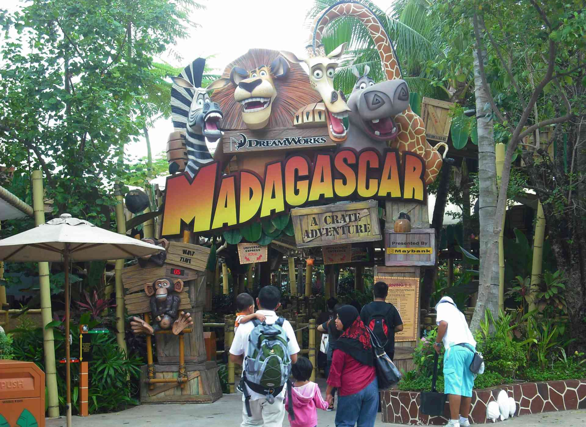

🢠Universal Studios Singapore
Located on Sentosa Island, Universal Studios Singapore is Southeast Asia’s first and only Universal Studios theme park. It offers thrilling rides, world-class entertainment, and movie-themed attractions suitable for visitors of all ages.
Explore 7 themed zones filled with fun and fantasy:
-
Hollywood (Universal Studios Singapore):
📠Location: Universal Studios Singapore, Sentosa Island
🌇 Overview: The Hollywood zone is the main entrance to Universal Studios Singapore and is designed like a glamorous 1970s Hollywood Boulevard with palm trees, art deco architecture, and a vibrant atmosphere.
🙌 What You’ll Find:- Character Meet-and-Greets: Minions, Marilyn Monroe, Woody Woodpecker
- Live Entertainment: Hollywood Dreams Parade, street dance acts
- Shopping: Universal Studios Store, Minion Mart
- Dining: Mel's Drive-In (classic American diner), Starbucks
🕒 Opening Hours: Typically 11 AM – 6 PM (may vary by season)
✨ Tips:- Catch street shows in the afternoon for great photo ops
- Shop for souvenirs early to avoid queues later
- Use the USS app to check showtimes and character locations
-
New York (Universal Studios Singapore):
📠Location: Universal Studios Singapore, Sentosa Island
🌆 Overview: The New York zone captures the essence of the Big Apple with its classic brownstone buildings, neon signs, and movie-set style streets. It’s a hub for special effects, interactive exhibits, and street performances.
📺 What You’ll Find:- Lights, Camera, Action! Hosted by Steven Spielberg – a thrilling soundstage show
- Sesame Street Spaghetti Space Chase – family-friendly indoor ride
- Street performances and photo spots with characters like Elmo & Cookie Monster
- Themed eateries and gift shops with NYC-style food and merch
🕒 Opening Hours: Typically 11 AM – 6 PM (may vary by season)
✨ Tips:- Don’t miss the special effects show — a highlight for movie buffs
- Great zone for younger kids and families
- Visit early as this zone gets crowded by midday
-
Sci-Fi City (Universal Studios Singapore):

📠Location: Universal Studios Singapore, Sentosa Island
🚀 Overview: Sci-Fi City offers an adrenaline-pumping futuristic experience with cutting-edge rides and a high-tech urban setting. It is the most thrilling zone in the park, perfect for adventure seekers.
🢠What You’ll Find:- TRANSFORMERS The Ride: A 3D battle simulation ride with high-speed motion effects
- Battlestar Galactica: The world’s tallest pair of dueling roller coasters (Human & Cylon)
- Accelerator – spinning ride for families and kids
- Transformer character meet-and-greets (Optimus Prime, Bumblebee)
🕒 Opening Hours: Typically 11 AM – 6 PM (subject to change)
✨ Tips:- Use Universal Express Pass to skip the Transformers ride queue
- Store loose items in lockers before roller coaster rides
- Ideal zone for thrill seekers and fans of sci-fi films
-
Ancient Egypt (Universal Studios Singapore):

📠Location: Universal Studios Singapore, Sentosa Island
🔲 Overview: Step back in time to the land of pharaohs, pyramids, and ancient secrets. Ancient Egypt immerses guests in a world inspired by 1930s archaeological expeditions with grand sculptures and desert backdrops.
🚪 What You’ll Find:- Revenge of the Mummy: A high-speed indoor roller coaster with special effects and dark turns
- Treasure Hunters: A slow jeep ride perfect for kids and families
- Egyptian-style statues and photo spots
- Ancient-themed snack stalls and souvenir shops
🕒 Opening Hours: Typically 11 AM – 6 PM (subject to change)
✨ Tips:- "Revenge of the Mummy" is one of the top-rated rides—don’t miss it!
- Perfect place for dramatic photos with statues and pyramids
- Use the Express Pass for faster access to rides
-
The Lost World (Universal Studios Singapore):

📠Location: Universal Studios Singapore, Sentosa Island
🌠Overview: The Lost World zone brings the excitement of dinosaurs and prehistoric adventure to life with attractions inspired by Jurassic Park. It features two main areas: Jurassic Park and WaterWorld.
🢠What You’ll Find:- Jurassic Park Rapids Adventure: A thrilling river raft ride through dinosaur territory (you will get wet!)
- Canopy Flyer: A suspended coaster with bird's-eye views of the jungle
- Dino-Soarin’: A fun ride where kids can control flying dinosaurs
- WaterWorld: Live stunt show with explosions, jet skis, and water effects
🕒 Opening Hours: Typically 11 AM – 6 PM (subject to change)
✨ Tips:- Bring a poncho or change of clothes for the water rides
- Arrive early for the WaterWorld show to grab center seats
- Use lockers for storing bags before riding the rapids
-
Far Far Away (Universal Studios Singapore):

📠Location: Universal Studios Singapore, Sentosa Island
📺 Overview: Step into the enchanted kingdom from DreamWorks' Shrek universe. This whimsical zone is home to fairy tale castles, ogres, and talking donkeys — perfect for families and fans of animation.
🧳 What You’ll Find:- Shrek 4-D Adventure: A 4D cinematic experience with moving seats and special effects
- Enchanted Airways: A junior roller coaster ride around the castle
- Magic Potion Spin: A Ferris-wheel style ride for kids inside Fairy Godmother’s Potion Shop
- Meet-and-greets with Shrek, Fiona, Puss in Boots, and Donkey
🕒 Opening Hours: Typically 11 AM – 6 PM (subject to change)
✨ Tips:- Shrek 4D is a great break from the heat and fun for all ages
- Perfect zone for younger kids and family photos with characters
- Arrive early for character meet-and-greets
-
Madagascar (Universal Studios Singapore):

📠Location: Universal Studios Singapore, Sentosa Island
🌿 Overview: Based on DreamWorks Animation's Madagascar films, this lush tropical zone is ideal for younger children and fans of the movie. The environment features vibrant jungle settings and beloved characters.
🌟 What You’ll Find:- Madagascar: A Crate Adventure: A gentle indoor boat ride through key scenes from the movie
- King Julien’s Beach Party-Go-Round: A fun and colorful carousel with Madagascar characters
- Photo ops with Alex the Lion, Gloria, Marty, and Melman
- Themed snack carts and souvenirs
🕒 Opening Hours: Typically 11 AM – 6 PM (subject to change)
✨ Tips:- Ideal for toddlers and families looking for relaxed rides
- Use this area as a calm break from intense attractions
- Arrive early for shorter queues at the boat ride
ğŸ Shows & Experiences:
- WaterWorld stunt show
- Street parades and character meet-and-greets
- Special effects and live-action performances
🔠Dining & Shopping:
- Movie-themed restaurants like Mel’s Drive-In and Goldilocks Chicken
- Shops with souvenirs, movie memorabilia, and apparel
🚇 How to Get There:
Take the MRT to HarbourFront Station (NE1/CC29), then transfer to the Sentosa Express to Waterfront Station. Universal Studios is a short walk from there.
🕠Opening Hours:
Typically 11:00 AM – 6:00 PM (hours may vary by season — check official site).
🎟️ Tickets:
Standard Day Pass: SGD $79 (Adults), SGD $59 (Children 4–12). Discounts available online or for locals.
🌟 Tips for Visitors:
- Buy tickets online to skip the queue.
- Download the USS mobile app for real-time showtimes and maps.
- Go early or on weekdays to avoid peak crowds.
- Bring a poncho or extra clothes for water rides.